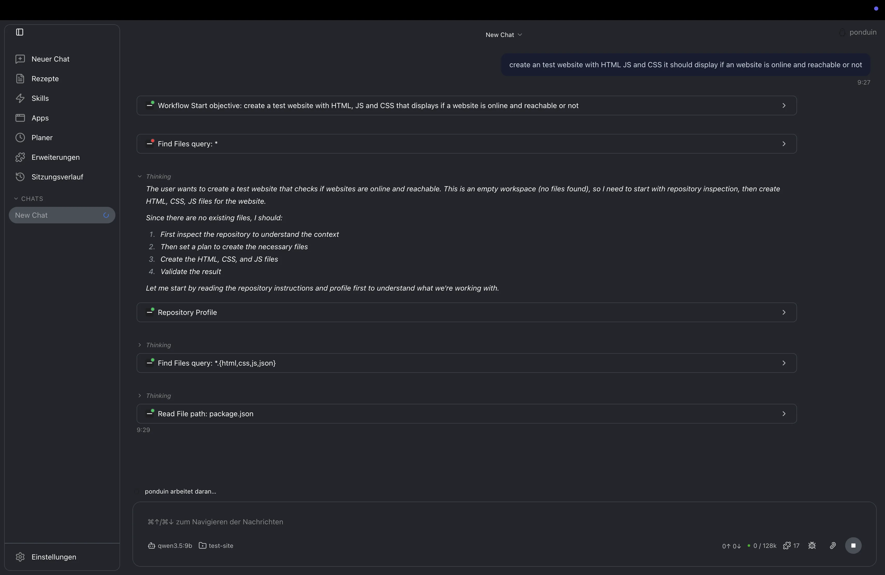

IT-Betrieb im Gesundheitsumfeld und seit Juli 2026 Netzwerkadministration bei Weiss IT Solutions GmbH.
Portfolio · Netzwerkadministration & Systemintegration
Joshua Pond
Ich arbeite an Netzwerkadministration, Systemintegration und Infrastruktur-Betrieb.
Fachinformatiker für Systemintegration mit Berufserfahrung im IT-Betrieb und aktueller Tätigkeit in der Netzwerkadministration. Diese Seite bündelt Arbeitsproben, nachvollziehbare Nachweise und eine veröffentlichte technische Forschungsarbeit.
Acht Cisco Networking Academy Zertifikate, öffentlich auf Credly verifiziert und überwiegend als PDFs verfügbar.
GitHub-Repositories, selbst gehostete Anwendungen, technische Dokumentation und eine DOI-veröffentlichte Forschungsarbeit.
Ausgewählte Arbeitsproben
Produkte, Infrastruktur und technische Umsetzung.
Die Detailseite erklärt Ziel, Technik und den konkreten öffentlich sichtbaren Nachweis jedes Projekts.

Ponduin
Lokaler, erweiterbarer Agent für Code, Terminal, Dateien und technische Workflows – mit Desktop-Anwendung, CLI und Rust-Runtime.

Inventory Pro
Inventar-, Ticket- und Wissensplattform mit Asset-Lifecycle, Rollen und Berechtigungen, TOTP-MFA sowie Audit-Verläufen.
Joey's Slimeventure
Öffentlich entwickeltes 2D-Spielprojekt mit Browser-Demo, Steam-Seite und offenem Repository auf Basis der Godot Engine.
Unabhängige Forschungsarbeit · 2026
Adaptives Load Balancing auf Edge-Hardware
Untersuchung mit NGINX, Python und Raspberry-Pi-Hardware – veröffentlicht auf Zenodo mit DOI.
Die Fallstudie führt durch Fragestellung, Laboraufbau, Vergleichsverfahren, Kennzahlen und die Grenzen der Ergebnisse.
+14,7%Effizienzgewinn gegenüber Round Robin im dokumentierten Laborvergleich.
+6,5%Effizienzgewinn gegenüber Least Connections im selben Aufbau.
92,1%Load-Balancing-Effizienz bei ungleicher Last im untersuchten Szenario.
+7,8%Zusätzliche Latenz durch die Metrik-Sammlung im Laboraufbau.
Die Werte gelten für den dokumentierten Raspberry-Pi-Laboraufbau; die Veröffentlichung begrenzt die Übertragbarkeit ausdrücklich.
Technische Schwerpunkte
Arbeitsfelder mit Bezug zu Praxis und Nachweisen.
Die ausführliche Profilseite ordnet die Themen nach beruflichem Kontext, öffentlicher Arbeit und Cisco-Nachweisen ein.
Netzwerkadministration
IP-Adressierung, IPv4/IPv6, Switching, Routing, VLANs, DNS/DHCP, WAN/VPN und strukturierte Fehleranalyse.
Praxis, Credly Skills und XING-ProfilInfrastruktur & Security
Segmentierung, Firewall- und VPN-Konzepte, sichere Zugriffspfade, Reverse Proxy und Zertifikatsverwaltung.
Infrastrukturarbeit, Dokumentation und ForschungSystemintegration & Betrieb
Server- und Client-Betrieb, Benutzer- und Rechteverwaltung, Updates, Support sowie technische Dokumentation.
Ausbildung und beruflicher WerdegangAutomatisierung & Software
Python, PowerShell, Web-Anwendungen und produktnahe Entwicklung für wiederkehrende technische Aufgaben.
Öffentliche Repositories und ProjekteCisco Networking Academy Zertifikate
Ausgewählte Cisco-Nachweise.
Wo ein offizieller Cisco-Verifikationsnachweis vorliegt, führt die Kachel direkt dorthin. Die vollständige Übersicht enthält alle acht Zertifikate, PDFs und das Credly-Profil.
Werdegang
Berufspraxis, Ausbildung und öffentliche Arbeit.
Die Profilseite enthält den vollständigen zeitlichen Kontext, die Schwerpunkte jeder Station sowie weitere verifizierbare Referenzen.
Netzwerkadministrator · Weiss IT Solutions GmbH
Aktuelle Tätigkeit in der Netzwerkadministration und im professionellen Kundenumfeld.
Systemintegrator · Städtisches Klinikum Wolfenbüttel gGmbH
IT-Betrieb im Gesundheitsumfeld: Infrastruktur, Support, Rechteverwaltung, Updates und Dokumentation.
Forschungsarbeit · Zenodo DOI
Konzeption und Evaluation eines adaptiven Load-Balancing-Systems mit Reverse Proxy auf Raspberry-Pi-Hardware.
Kontakt
Berufliche Anfragen.
Kontakt für Bewerbungsprozesse, fachliche Rückfragen und öffentliche Projektinformationen.